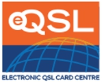

20 Agosto 2026

¡Buenas propagaciones, amigos!
¿Recuerdas la expectativa de abrir el casillero y encontrar una QSL de papel? Pues ahora hay una versión digital de esa alegría, y se llama eQSL.cc: el centro mundial de tarjetas QSL electrónicas.
La idea es genial y simple: en vez de imprimir y mandar una tarjeta por correo, envías la confirmación por Internet y el receptor la ve al instante en su pantalla (y puede imprimirla si quiere). Sin sellos, sin semanas de espera.
¿Qué es exactamente eQSL.cc?
eQSL.cc (Electronic QSL Card Centre) es un sistema en línea que permite intercambiar confirmaciones de contacto en formato digital. Nació en 1998 como un primer experimento llamado QSLcard.com y en el año 2000 se transformó en la plataforma robusta que conocemos hoy.
Hoy es el intercambio de eQSL más popular del mundo, con miles de millones de tarjetas intercambiadas y usuarios registrados en más de 340 países. Casi todos los programas de registro serios pueden conectarse a su base de datos.
Cómo empezar: registro en dos pasos
- 1. Completa el formulario con tu indicativo y un email real.
- 2. Revisa tu correo: recibirás un "código de registro".
- 3. Activa tu cuenta ingresando el código y eligiendo tu contraseña.
- 4. ¡Listo! ya puedes enviar y recibir eQSL.
Enviar y recibir tarjetas
Para enviar una tarjeta entras al sistema, anotas el contacto (fecha, hora UTC, banda y modo) y eliges el diseño de tu QSL. El sistema genera la tarjeta digital y la pone en la "bandeja de entrada" (Inbox) del destinatario. Y viceversa: cuando alguien te envía una, aparece automáticamente en tu casillero.
Lo mejor: no necesitas el email de nadie. Si en el QSO dijiste "QSL vía eQSL.cc", el otro colega sabrá dónde encontrarte. Además, si ambos usan eQSL, el sistema te avisa con un correo cuando tienes una tarjeta esperándote.
La Autenticidad Garantizada (AG)
Para que las QSL electrónicas sean aceptadas por diplomas y concursos, eQSL desarrolló el sistema AG (Authenticity Guaranteed): verifica la identidad del operador y marca las tarjetas como auténticas. Las eQSL con sello AG son las que valen para la mayoría de los premios.
eAwards: los diplomas de eQSL
Uno de los grandes alicientes de eQSL es su sistema de eAwards: decenas de diplomas que se ganan coleccionando confirmaciones autenticadas, como contactar todos los estados de EE. UU., todos los continentes o un número de países. Tus tarjetas AG se cuentan automáticamente y puedes ver tu progreso en tu perfil.
Integración con tu log
Si llevas tu libro de guardia en software, no tendrás que escribir a mano cada contacto: eQSL acepta archivos ADIF y programas como Ham Radio Deluxe, Log4OM o FLDigi se conectan directamente para subir tus QSO y descargar tus confirmaciones.
¿Ya usas eQSL.cc? ¿Coleccionas eAwards? ¿O eres de los que prefieren el papel? ¡Cuéntamelo en los comentarios!
Entra ahora mismo a eQSL.cc: www.eqsl.cc